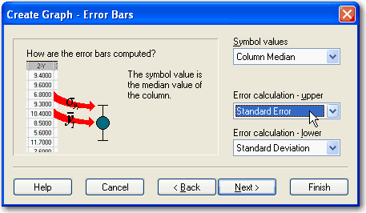

Creating 2D Scatter Plots with Error Bars
In a Line and Scatter Plot with Error Bars, plot the means of each column as the Y value, and represent the standard deviations with error bars.
Use the Graph Wizard to create 2D plots with error bars. Scatter plots, line/scatter plots, or simple bar charts can be created with error bars. For more information, see SigmaPlot Graph Styles
To add error bars to an existing plot, first change the plot type. For more information, see Creating and Modifying Graphs .
To create a scatter plot with error bars:
- Select the worksheet columns to plot before creating your graph by dragging the pointer over your data.
- On the Create Graph tab, click the Scatter group, and then click Simple Scatter - Error Bars.
-
In the Graph Wizard, select the
error bar source from the Symbol Value
drop-down list.
- Symbol Value. Choose either Column Means to use the column means as the error bar source, Replicate Row Means to use the row means as the error bar source, Worksheet Columns to use values you’ve entered in the worksheet, or 2 Worksheet Columns to read error bar end values from sets of two adjacent columns. You are prompted during data picking to specify the column to use as error bar source data.
-
Error Calculation. If you choose any option besides Worksheet Columns as the symbol value, specify the error calculation method to use for upper and lower error bars.
- Specify the error calculation for the error bars from the Error Calculation - Upper and Error Calculation - Lower drop-down lists. Error Calculations are not applicable if you select Worksheet Columns or Asymmetrical Error Bars from the Symbol Value list.
-
Click Next.
- Select the appropriate data format from the Data Format list. X column averaged plots require a constant Y column value, and Y column averaged plots require a constant X column value.
-
Click Next.
Figure 2. Specifying the Data Columns for the Error Bars - Specify which worksheet columns correspond to the data for your plot. Since you selected columns prior to opening the Graph Wizard, your choices automatically appear in the dialog box, and you can click Finish to create the graph.
- To create a single plot graph, choose data for every column you are using to make the graph. To create a graph of multiple plots, choose data for the first plot, then click Next to pick data for the next plot. Repeat this process for as many plots as necessary.
- To make a graph with simple error bars or a graph with multiple error bars using worksheet columns as the Symbol Value for error bar data, you are prompted to choose columns for error bar data. Repeat the data picking process for every column you are using to create your plot.
-
To make a graph using any of the other
sources for error bar data (i.e. Column Means, Column Median, Standard
Error, etc.) with multiple error bars, you can create a graph using a
single plot, or a graph with multiple plots. Use multiple plots if you want to
use different symbols to distinguish between data sets.
Tip: If you make a mistake while picking data, click the wrong entry in the Graph Wizard, then choose the correct column from the worksheet. You can also clear a column assignment by double-clicking it in the Selected Columns list. Click Back to access previous Graph Wizard panels.
- Click Finish when you have finished picking the data to create the plot.